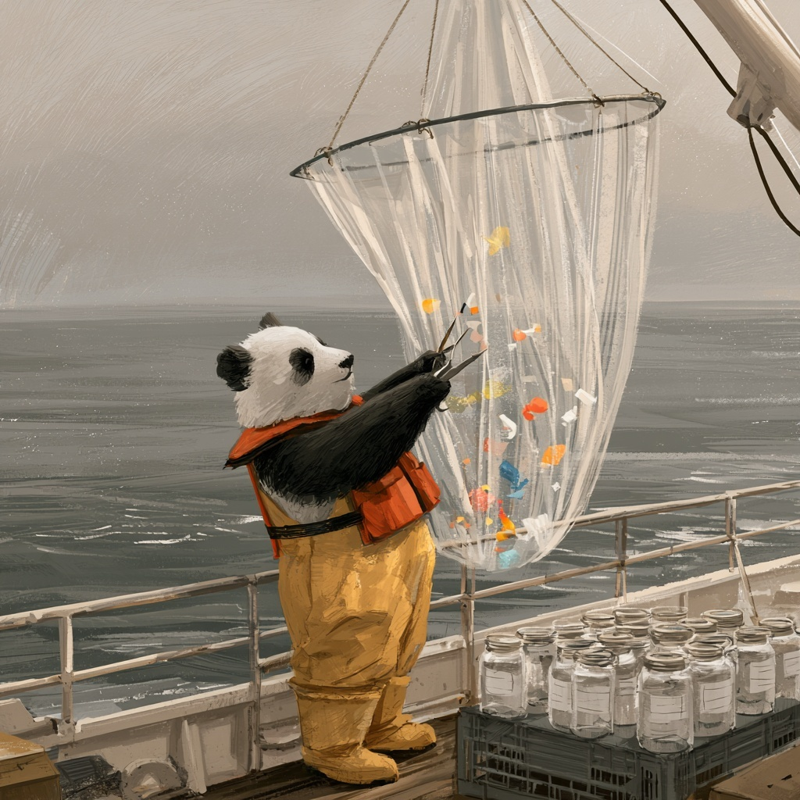

Code
import pandas as pd
import numpy as np
import matplotlib.pyplot as plt
url = 'https://eds-217-essential-python.github.io/data/marine_microplastics.csv'
df = pd.read_csv(url, parse_dates=['Date'], date_format='%m/%d/%Y %I:%M:%S %p')🌊 Microplastics: From Raw File to Real Numbers

A panda, sorting the plastic from the plankton. MidJourney 5
NOAA’s National Centers for Environmental Information maintain an archive of every marine microplastics measurement they can find: 16,245 samples, pooled from thirty-seven separate studies, taken between 1972 and 2022 by research vessels, citizen scientists, and undergraduates with nets.
NOAA assembled the archive one study at a time, rather than designing it as a single experiment, so the columns are a mixture of measurements, provenance, and somebody else’s classification scheme. Most of the environmental data you will ever be handed was put together the same way.
We have already worked with this file three times today. This afternoon you will start again from the raw download and use it to answer one question: Is there more plastic in the Pacific than the Atlantic?
NOAA National Centers for Environmental Information, Marine Microplastics database. https://www.ncei.noaa.gov/products/microplastics
Everything below is built from these three patterns, plus one more from this morning.
df['new'] = expression # the derived-column pattern
df.dropna(subset=['col']) # the missing-data pattern: drop the row...
df['col'] = df['col'].fillna(value) # ...or keep the row and fill the hole
df['col'] = df['col'].str.strip() # the string-cleaning patternAnd from this morning:
Create a new notebook named EOD_Day4_Microplastics.ipynb.
Add a title cell:
Date column is text, and pandas can convert it while it reads if you tell it exactly what the text looks like.read_csv() takes a parse_dates= argument naming the columns that hold dates, and a date_format= argument describing how they are written. Here is the whole line. Run it as written:
The format string is a small language of its own. %m/%d/%Y is month, day, four-digit year; %I:%M:%S is a twelve-hour clock; and %p is the AM or PM that goes with it. You are not expected to be able to write one of these yet, so copy the line above exactly as it is and keep going.
Once a column is a real date, you reach the pieces of it through .dt. You will need exactly one of these in task 13, and we are giving it to you here:
The .year on the end asks for the year of each date, and the month, the day and the rest of the pieces are available in the same way. Dates get a full session on Day 6.
Answer each of these questions in a markdown cell underneath the code that produced the answer.
.info(). Which columns are object, and which of those should be something else?.isnull().sum(). How many columns have gaps? Which are the columns, and how many gaps do they have?Oceans is missing on 271 rows and Measurement on 5,792. Are those the same rows? How do you know?Part 2 requires some judgement, so more than one answer here is defensible. Several of these tasks change how many rows you have, so print .shape after each one and record the number in a markdown cell.
Use .dropna() with subset= to keep only the rows with a Measurement. How many rows are left, and what fraction of the file is that?
Run df['Unit'].value_counts() now and compare it with the counts below, which are what the same line gave before task 5: pieces/m3 10,178, pieces/10 mins 5,792, pieces kg-1 d.w.
Sampling Method and Organization on the rows you removed, if you want to be sure.)Fill the gaps in Regions and SubRegions with 'Unspecified', one column at a time, assigning each result back. Confirm with .isnull().sum() that only Keywords is still missing anything.
In a markdown cell: task 5 removed rows and task 7 kept them. Both were the right decision. Explain in two or three sentences what made them different.
Check for duplicated rows. Do it twice: once bare, and once with subset= naming the columns that define a single observation, which here are Latitude, Longitude, Date, Measurement and Unit. Report both numbers and say which one you believe, and why the two differ so much.
Filter to the samples reported in pieces/m3, end the line with .copy(), and call the result samples. How many rows?
Accession Number is a label, not a quantity. Convert it to text with .astype(str) and assign it back. Confirm with .dtype.
The Oceans values all end in the word “Ocean”. Use .str.replace() to make a new column called ocean holding the short name, and check it with .value_counts().
Add a column called year holding the year each sample was taken, using the supplied line from the setup Field Note. Then run .value_counts() on year. Which single year contributed the most samples? In a markdown cell, say whether the archive is spread evenly across its fifty-one calendar years, and what an uneven spread would mean for anyone who wants to use it to describe a trend.
Run .describe() on Measurement. Write down the median and the maximum. How many orders of magnitude separate them?
Draw a histogram of Measurement.
On Day 1 we drew a line with plt.plot(series). A histogram is the same kind of call:
plt.hist() sorts the values into bins and draws a bar for each. Plotting gets a full day next week, where you will learn to control bins, axes, and everything else. Today you need it only to see the shape of the distribution.
The histogram you just drew is useless. State the reason why in a markdown cell.
Filter samples to the rows where Measurement is greater than zero, end the line with .copy(), and call it positive. How many samples reported exactly zero pieces? Is zero a measurement or a missing value?
Add a column to positive called log10_measurement holding np.log10() of the measurement. Run .describe() on it, then draw the histogram again.
In a markdown cell, describe the shape you can now see and could not see before. Name one thing about the data that this plot tells you and .describe() did not.
The archive has a column called Density Class with values like Low and Very High. Somebody decided those cutoffs. You will write your own classifier first, and then compare your labels against theirs.
Write a function called density_class that takes a measurement in pieces per cubic metre and returns:
'low' below 0.01'medium' from 0.01 up to 1'high' at 1 and aboveTest it on 0.001, 0.5, and 50 before touching the DataFrame.
Use .apply() to run your function down positive['Measurement'], store the result in a column called my_class, and report the counts.
Now compare your labels with NOAA’s. Filter positive to the rows NOAA labelled 'Medium', and run .value_counts() on my_class for just those rows. Do the same for NOAA’s 'Very Low'.
Something is wrong, and it is not your function. In a markdown cell, explain what NOAA’s Density Class must actually mean, given that samples they called Very Low fall in your high bin. Then say whether you would use their column in an analysis, and why.
Look at Density Range alongside Density Class. Run positive[['Density Class', 'Density Range']].drop_duplicates() and read the result carefully.
Build two tables with the filter pattern: the Atlantic samples and the Pacific samples, from positive. Report the row count of each.
Run .describe() on Measurement for each. Compare the two medians (the 50% row), and then compare the two means. They will probably tell you two different stories. Which one would you put in a report, and why?
Compare the mean of log10_measurement for each instead. In a markdown cell, say what that comparison is doing that the comparison of raw means was not.
Before you conclude anything: how many Pacific samples are there, out of how many total? Task 12 counted the oceans in samples, before the zeros came out, so expect a different pair of numbers here. In one sentence, say what you would need to know about how the samples were collected before you would publish a comparison between these two oceans.
In a single markdown cell of 200 to 300 words, answer this:
A journalist emails you: “Is there more plastic in the Pacific than the Atlantic? I heard about the garbage patch.” You have this dataset and one afternoon. What do you tell them?
Your answer must cite at least three specific numbers you computed here, must name at least one cleaning decision you made and what it cost, and must include at least one thing this dataset cannot tell them. Use complete sentences.
Look back through your notebook. Every code cell you wrote was one of a handful of patterns:
df.dropna(subset=['col']) # keep rows that have what you need
df['col'] = df['col'].fillna(value) # or keep the row and fill the hole
df['col'] = df['col'].astype(str) # tell pandas what a column is
df['col'] = df['col'].str.replace(a, b) # tidy text
df['new'] = expression # add a column that was not in the file
df['new'] = df['col'].apply(my_function) # add a column only you know how to computeSix patterns, and every one of them is new today.
The pattern that did the most work today was df['new'] = ..., the derived column, which you built four times over: ocean, year, log10_measurement, and my_class. The twenty-two columns you downloaded did not have an answer to the journalist’s question in them, and the four columns you made yourself are where you found one!
Before you close your notebook, check that:
subset= does, and why .duplicated() without it returned zeroIf something here did not work and you could not work out why, ask Cella or Kelly rather than fighting one cell to the end of the afternoon. Getting stuck on an end-of-day practice is normal and expected!